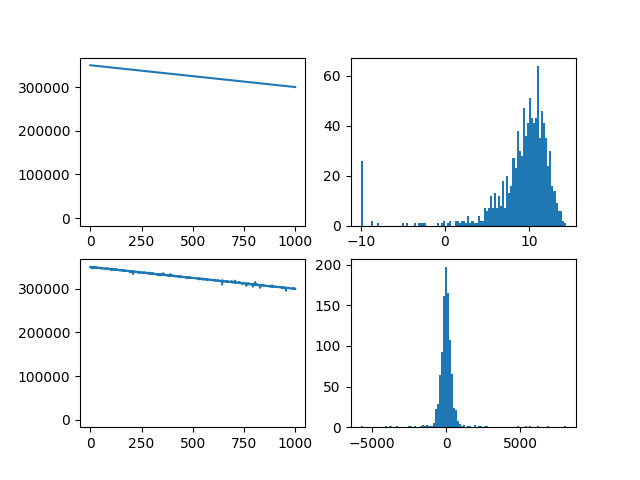

Note
Click here to download the full example code
Adding random errors¶

Out:
Caching error calculation data to: data/
import pathlib
import numpy as np
import matplotlib.pyplot as plt
import sorts.errors as errors
import sorts
eiscat3d = sorts.radars.eiscat3d
try:
pth = pathlib.Path(__file__).parent / 'data'
except NameError:
import os
pth = 'data' + os.path.sep
print(f'Caching error calculation data to: {pth}')
err = errors.LinearizedCoded(eiscat3d.tx[0], seed=123, cache_folder=pth)
# err = errors.LinearizedCoded(eiscat3d.tx[0], seed=123)
num = 1000
ranges = np.linspace(300e3, 350e3, num=num)[::-1]
snrs = np.random.randn(num)*5 + 10**1.0
snrs[snrs < 0.1] = 0.1
perturbed_ranges = err.range(ranges, snrs)
fig, axes = plt.subplots(2,2)
axes[0,0].plot(range(num), ranges, 100)
axes[0,1].hist(10*np.log10(snrs), 100)
axes[1,0].plot(range(num), perturbed_ranges, 100)
axes[1,1].hist(ranges - perturbed_ranges, 100)
plt.show()
Total running time of the script: ( 0 minutes 0.422 seconds)